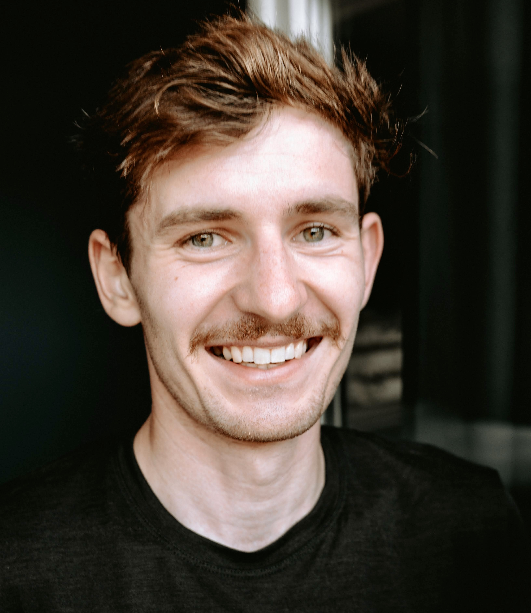
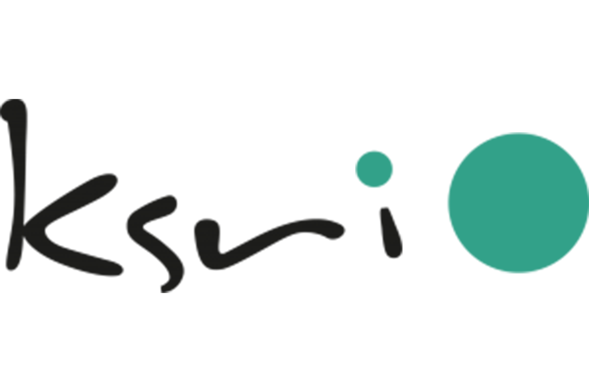
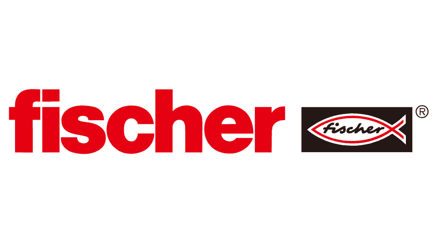
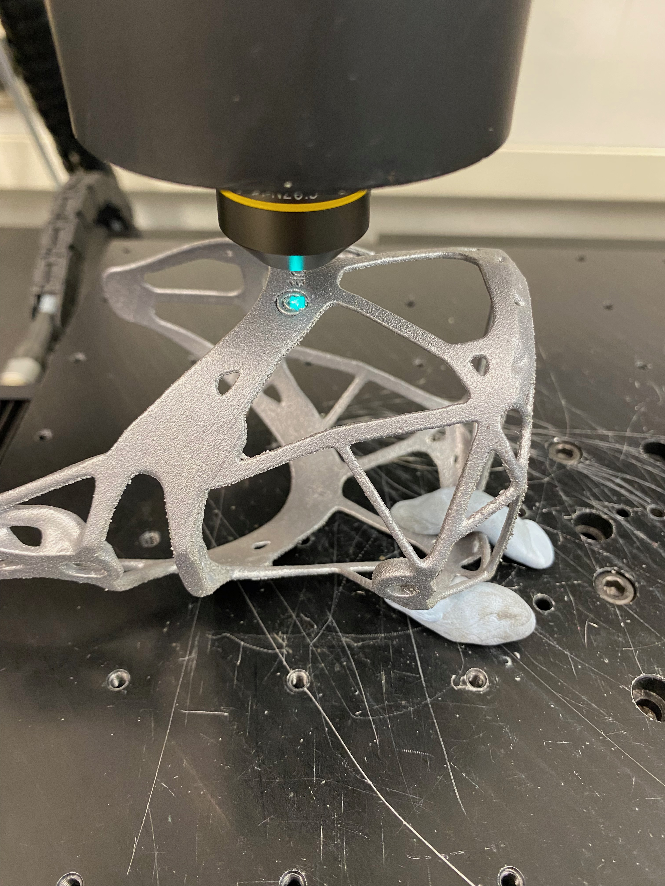
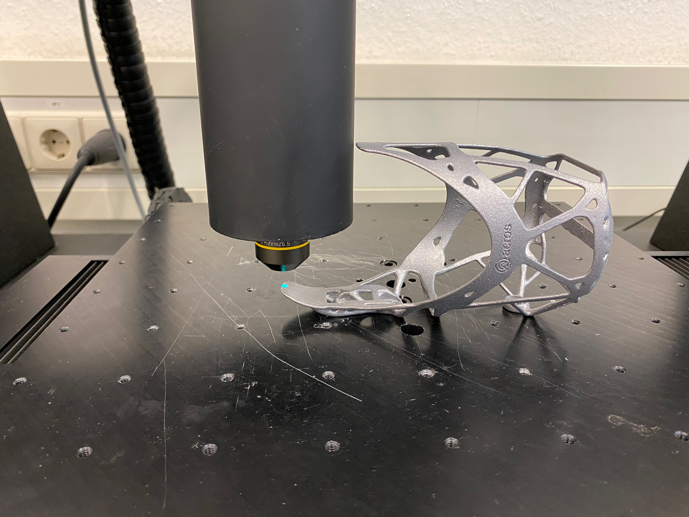
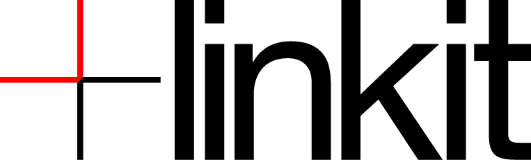
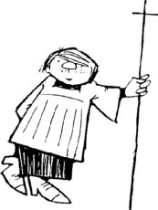

Introduction of myself

Hi My Name is Nils.
I am 24 years old and was born and raised near Freiburg and the Black Forest.
After my time in school and the Completion of the Abitur I started my Studies @KIT.
And so I began to study in the Bachelor Program of Industrial Engineering and Management in the year of 2017.
During this time a pursued two Internships and consluded my Bachelor with my Thesis with the topic: "A Descriptive Analysis of Impact Categories in Entrepreneurial Ecosystems"
A small documentation of my Bachelor Thesis topic is presented on the following website: Impact Categories Overview
Work Experience
| Time Frame | Work Description | Responsibilities & Skills |
|---|---|---|
| Oct 2023 - Today | Working Student in Data Analytics In the Data Analytics team, we are part of a higher-level competence department that develops new technological solutions for the company and subsequently introduces them into the company. |
|
| Apr 2022 - Jul 2023 |  At Ksri, a research and teaching institute at KIT, I was involved in restructuring a lecture dealing with quantum technologies and their possible applications. I then worked on the exercise for artificial intelligence in service systems. |
|
| Sep 2020 - Nov 2020 | As part of an agile team in software development, I was able to expand my experience in the areas of software and service pricing and market as well as competitor research. The project team was an internal startup that pursued the innovative idea of predicting emissions from industrial energy plants in addition to continuous emission monitoring with conventional sensors. |
|
| Mar 2018 - Apr 2018 | EY as a global Tax and Corporate Consutling Company has a Broad Portfolio. In the early stages of my University Studies I chose EY to get an Overview with a short Internship in the first Semester Holidays. Corporate tax consulting taught me a lot of the fundamentals of business early on in my studies. |
|
| Aug 2017 |  During one of my last summer vacations at school, I worked as a vacation helper on the production line at the local Fischer plant. At this particular Fischer site, they produce their mortar and hardener compounds and all kinds of fastening options for the construction sector. |
|
University Projects
Bachelor
In addition to my work experience, I was also able to expand and improve my skills and abilities. It started with smaller group projects in the Bachelor's program. These included a project on EBSS (use of business standard software), in which we were allowed to model processes in Horus Business Modeler using fictitious but realistic company data. We also had the opportunity to use the data mining and process mining software Celonis in this subject. The course introduces us to very different topics, which is why the next project was a team project in Marketing. The aim of the project was to develop a marketing strategy for a software product in the health sector. I completed my Bachelor's degree with my Bachelor's thesis. I wrote this with a focus on the start-up scene. I spent five months reading up on the various players in the ecosystem that focus on promoting start-ups with impact. But what exactly is meant by impact was part of my work. Which startups do the players consider to be sustainable or have an impact focus? Are there groups that appear together again and again? Over the five months, I built up a data set and subsequently analyzed it to identify three groups of categories. However, the results can be looked up in more detail on the corresponding website. ---> website verlinken
Master
Another chapter I was able to open in the Master's program.
Here I was able to gain even more practical experience in various areas of Industrial Engineering & Management studies.
These ranged from a seminar paper in economics to an internship in additive manufacturing processes.
In the seminar paper, we developed an experiment that could prove that a chatbot for pregnant families would help reduce the overload of midwives.
As you can see on the left, we have summarized this in a paper, which you can also access there.

In contrast to the seminar paper, we were able to design a component from scratch in the practical course on additive manufacturing.
The task was to design a bottle cage for bicycles, simulate additive manufacturing, post-process it and test the quality and compare it with subtractive or other conventional processes.
It should also be emphasized that the design was developed generative from the load construction by nTopolog.
The picture below shows the design and the finished printed bottle holder.

One of the projects where I was able to learn a lot was the lecture Artificial intelligence in Service Systems, Applications in Computer Vision.
Here we were allowed to come up with a use case for computer vision and then develop it according to the CRISP-DM model.
From generating the images to creating a front-end interface for the application.
And afterward I documented our work on a website which you can find here.
The biggest project in the Master's program was my participation in Service Design Thinking.
This is an applied Design Thinking course based on the world-renowned ME310 course at Stanford University.
Over 9 months, I worked on the challenges of a corporate partner in the International SUGAR Network using various methods from the Design Thinking manual.
However, I was not alone, but part of an international interdisciplinary team.
Our final prototype after the 9 months was a software that predicts the energy consumption of industrial cooling systems and then reduces the carbon dioxide according to the energy mix.
We were able to present this prototype in San Francisco in June 2023.
Overall, I can say that I learned a lot during the 9 months in terms of project work, tackling uncertain problems and presenting results to different target groups.
All other projects, events or contacts to the SUGAR Network can be found here.
For my Master's degree, I also took a technically applied course at the KIT's Institute of Production Technology.
The course dealt with the practical implementation of AI models in a production context.
In detail, we got a NASA Milling data set in a group of 5 students.
This gives the time series and the associated wear of the milling flank of an industrial milling machine.
Subsequently, we analyzed the data, extracted and generated features and then selected the most meaningful ones based on several results to train an RNN.
We then fine-tuned the RNN using the optuna library.
The exact procedure can be viewed here on the left in the slide deck gallery.
Academic writing is one of the core elements of a university.
This was not only learned theoretically in the "Digital health" course, but also put into practice directly.
In our topic, we investigated whether the introduction of computer vision-supported diagnoses in healthcare would change the organizational identity.
To this end, we interviewed various experts who would be affected by this, transcribed the interviews and then evaluated them against our research question.
Our paper was subsequently published here DOI: 10.5445/IR/1000162178
.
If you are interested, just take a look.
Volunteer Activities

After my internship at SICK AG, where I had contact with agile software development and data-driven ML models. I then joined the linkit university group based in Karlsruhe at KIT.
I have been a member since the winter semester of 2020 and also took on the leading role in the marketing department the following year.
This year we were able to implement some new features and achieve the highest number of participants at an event with around 150 through targeted advertising.
In addition to the activities in the association, I took the opportunity to take part in the training courses, keynote speeches and internal data science challenges.
Click HERE for the certificate of the university group.

Joining the local youth Association Ministranten St. Jakobus in 2008, he became a group leader from 2015 to 2017, overseeing group sessions and activities.
Nils played a crucial role in local events, took on leadership responsibilities, and contributed to parish activities.
He led weekly sessions, managed materials, and served as a responsible leader for the annual summer camp in 2016, handling preparation, organization, and execution.
Click HERE for the certificate of the youth Association.
Spare Time Activities
To showcase another aspect of my personality, I would like to introduce the activities that play a major role in my life alongside my work and studies. In general, I have to say that I love sport. Since I was young, I've always done sport as long as I wasn't injured. I discovered cycling at the beginning of my studies. The pandemic has increased my commitment and I also spend the odd vacation on my bike. Besides that, I played soccer and tennis for a long time, tried golf and lacrosse and I couldn't keep my hands off judo either. To sum up, I like to spend my time being active, preferably in the great outdoors.
Riding the local Trails into the Sunset
Hiking and Cycling in Croatia at the Plitvice Lakes
Hiking at the West Coast of California
Contact
Now if you have any questions, want to get in touch with me to expand your network or any other reason, do not hesitate to contact me.